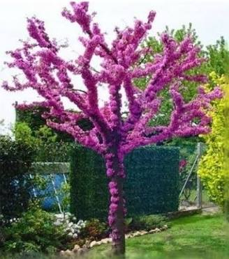
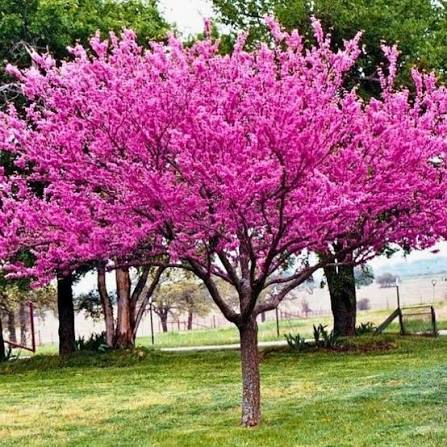
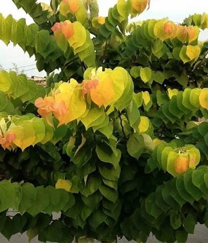
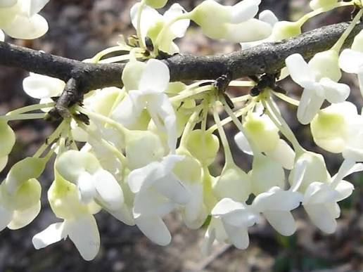
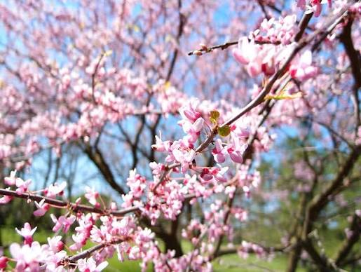

Judaszowiec (Cercis L.) – rodzaj roślin z podrodziny Cercidoideae, jednej z najstarszych lub najstarszej linii rozwojowych bobowatych (Fabaceae). Należy do niego 10 gatunków. Większość – 6 gatunków występuje w Chinach, dwa w Ameryce Północnej, jeden (judaszowiec południowy C. siliquastrum) w basenie Morza Śródziemnego i jeden w Azji Środkowej. Występują w typowych dla klimatu śródziemnomorskiego formacjach zaroślowo-leśnych (chaparral, makia), w lasach mieszanych i liściastych na siedliskach świeżych, na nizinach i w niższych położeniach górskich.
Rośliny te są uprawiane jako ozdobne, głównie dla efektownych kwiatów pojawiających się przed lub równocześnie z liśćmi. Wykorzystywane są także jako rośliny lecznicze, pokarmowe (jadalne są kwiaty i młode strąki), miododajne i źródło drewna. Indianie północnoamerykańscy z drewna judaszowca kanadyjskiego wykonywali łuki.
Judaszowiec południowy uprawiany w rejonie Jerozolimy jako drzewo ozdobne określany był mianem Arbor Judae – „drzewa żydowskiego” (tak też po polsku był zwany np. w początkach XIX wieku). Później, najprawdopodobniej z powodu mylącej nazwy, rozpowszechniła się legenda o tym, że to drzewo, na którym powiesić się miał Judasz Iskariota (Arbor Judaeae), co wpłynęło na nazwę zwyczajową tych roślin w różnych językach. Nazwa naukowa pochodzi od starożytnej nazwy greckiej – cerkis, której Teofrast z Eresos używał w odniesieniu do judaszowca południowego.
Krzewy i niewielkie drzewa do 10 m wysokości.
Skrętoległe i sezonowe, u nasady z łuskowatymi, błoniastymi i szybko odpadającymi przylistkami. Ogonki zgrubiałe u nasady blaszki. Liście są pojedyncze, co jest cechą wyraźnie różniącą od innych przedstawicieli bobowatych. Blaszka zaokrąglona, sercowata lub nerkowata, całobrzega, na wierzchołku zaostrzona, rzadziej zaokrąglona (C. siliquastrum) lub wcięta (C. occidentalis). Użyłkowanie dłoniaste. Jesienią liście przebarwiają się na żółto.
Wszystkie gatunki mają kwiaty skupione w pęczkach tworzących się nie tylko na młodych pędach, ale również na grubych konarach, a nawet na pniu (kaulifloria). Tylko C. racemosa ma kwiaty skupione w gronach wyrastających wyłącznie w kątach liści. Kwiaty są motylkowe, ale z wszystkimi płatkami wolnymi – brak łódeczki, różowo-fioletowe, bardzo rzadko białe. Dwa dolne płatki są większe – one obejmują i chronią pręciki i słupek. Trzy górne są rozpostarte lub odgięte. Działek kielicha jest 5, nierównej długości, u nasady zrośniętych. Pręcików jest 10 i są one wolne. Nitki pręcików często w dole są owłosione. Słupek pojedynczy, z jednego owocolistka, z górną zalążnią, w której rozwija się od dwóch do 10 zalążków. Szyjka słupka jest nitkowata, zwieńczona główkowatym znamieniem.
Strąki płaskie, często czerwieniejące po dojrzeniu i długo wiszące na drzewie, jeszcze po zrzuceniu liści. Nasiona zaokrąglone i spłaszczone.
Jeden z kilkunastu rodzajów podrodziny Cercidoideae stanowiącej jeden z kladów bazalnych w obrębie rodziny bobowatych . W obrębie podrodziny stanowi klad bazalny. Pierwotnie był to jeden gatunek rozprzestrzeniony na półkuli północnej, którego różnicowanie nastąpiło w wyniku izolacji w różnych refugiach w czasie zlodowaceń. Dawniej rodzaj zaliczany był do brezylkowych Caesalpinioideae (podrodziny lub rodziny w zależności od ujęcia systematycznego)




